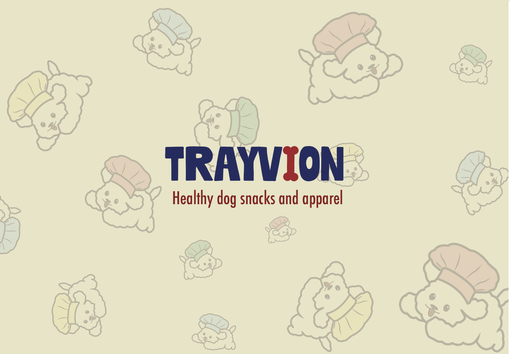

Trayvion
Created in Design Entrepreneurship for local up-and-coming brand Trayvion. Trayvion is a healthy dog snack and apparel brand based in Fort Smith, AR. Trayvion encourages a healthy, organic, homemade diet for dogs with ingredients provided by local farmers. Trayvion also emphasizes uplifting the disabled community, displayed through the disability flag colors shown across the brand identity. I created two logos, a color palette, brand guidelines, and a strong identity to allow the client to use these creations across various platforms and mediums such as packaging, social media, and more. At the end of the semester, I provided the brand with stickers, business cards, and embroidered hats. Logos created in Adobe Illustrator. Brand guideline spreads created in InDesign. Merchandise created with VistaPrint.